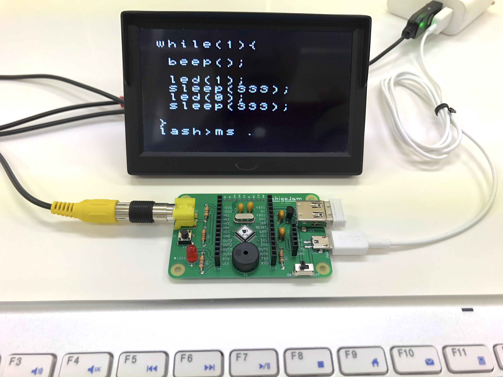

SPI、DAC、viコピペ、16ファイル、表示拡大、数々の新機能を搭載し「IchigoLatte typeR 20211006」リリース！
新しい IchigoLatte typeR ファームウェア リリース、目玉はこちら。
- SPI out
- DAC
- 画面表示拡大
- コピー&ペースト
- 16ファイル
- USB&PS2キーボード
たとえば、
[new] IchigoLatte typeR
— Yuichi Ray Matta | 時を贈るおじさん (@yrm__) October 6, 2021
（デモ）数値掲示演出デバイス by JavaScript(like)https://t.co/LyqdcTV0LH pic.twitter.com/tnISFcjBDo
SPIデバイスもこの通り、楽しく演出。
// 8 Digit SPI
var C=new Array(10);{
C[0]=0xc0; C[1]=0xf9;
C[2]=0xa4; C[3]=0xb0;
C[4]=0x99; C[5]=0x92;
C[6]=0x82; C[7]=0xf8;
C[8]=0x80; C[9]=0x90;
C[10]=0xff;
}
var N=80000000;
var S=1000;
video(0);
spim(0);
var d=new Array(8);
var t0=tick();
var m=8;
while(!inkey() * m){
if(S<tick()-t0){
m=m-1;
t0=tick();
}
var num=N;
var i=8;
while(m<i){
i=i-1;
if(num) d[i]=num%10;
else {m=0;d[i]=10;}
num=num/10;
}
i=m;
while(i){
i=i-1;
d[i]=rnd(10);
}
out(0);
i=8;
while(i){
i=i-1;
var dot=0x80*((8-i)%3==1);
dot=dot*(d[i]!=10);
spi(C[d[i]]+dot);
}
out(1);
sleep(66);
}
spim(-1);
video(1);
ソースコードは JS-like な MINIScript でこんな ↑ 感じ。
// SpiLED8 module
function SpiLED8(){
var d=new Array();{
d[10]=0xc0; d[11]=0xf9;
d[12]=0xa4; d[13]=0xb0;
d[14]=0x99; d[15]=0x92;
d[16]=0x82; d[17]=0xf8;
d[18]=0x80; d[19]=0x90;
d[20]=0xff;
}
this.d=d;
this.dot=0;
this.show=function(){
var dt=0x80*this.dot;
video(0); spim(0);out(0);
spi(this.d[10+this.d[7]]);
spi(this.d[10+this.d[6]]);
spi(this.d[10+this.d[5]]);
spi(this.d[10+this.d[4]]
+dt*(this.d[4]!=10));
spi(this.d[10+this.d[3]]);
spi(this.d[10+this.d[2]]);
spi(this.d[10+this.d[1]]
+dt*(this.d[1]!=10));
spi(this.d[10+this.d[0]]);
out(1);spim(-1); video(1);
};
}
// 8 Digit SPI by module
include(2);
var o=new SpiLED8();
o.dot=1;
var N=3330000;
var S=1000;
var t0=tick();
var m=8;
while(!inkey() * m){
if(S<tick()-t0){
m=m-1;
t0=tick();
beep(440);
}
var num=N;
var i=8;
while(m<i){
i=i-1;
if(num) o.d[i]=num%10;
else {m=0;o.d[i]=10;}
num=num/10;
}
i=m;
while(i){
i=i-1;
o.d[i]=rnd(10);
}
o.show();
if(m==0) beep(587*2,666);
sleep(66);
}
IchigoLatte typeR の JS は include(...) 機能に対応しているので、SpiLED8オブジェクトを別モジュール(ここでは2番)にしておく、こんな ↑ やり方も可能。
max length of an array:
256
number of arrays that can be created:
4
max number of members of an object:
16
number of objects that can be created:
64
LPC1114 の LatteJS に比べて、仕様も拡大、なんとオブジェクトは同時に64個も生成可能！これなら面白いゲームつくれちゃうかも！？
DACは、INポート2,3 で可能。
\ DAC sin,cos @FORTH
0
BEGIN
inkey 0 = WHILE
2
OVER sin8 256 + 8 * 4095 * 4096 /
dac
3
OVER 90 + sin8 256 + 8 * 4095 * 4096 /
dac
1 +
REPEAT
こんなFORTH-likeなコードをかけば、
出力電圧はsinとcosの波形に！ 距離センサーや湿り気センサー、ジョイスティックのようなアナログ出力のデバイス側になることもできそう。もちろん JS-likeにもRuby-likeにもPython-likeにもかける。

lash には video コマンドが追加され、IchigoJam BASIC のように画面表示を拡大可能。
なんと、vi には コピペ が導入されました。
セーブできるファイル数は 16 に拡大。
USBキーボードに対応しワイヤレスなものも動作、PS2も接続可能。
// Kawakudari JS
var x=15;
cls();
while(!scr(x,5)){
lc(x,5); log("O");
lc(rnd(31),23); log("*");
sleep(50);
var k=inkey();
x=x-(k==28)+(k==29);
scroll(0);
}
JS-like な MINIScript によるこのようなプログラミングも可能ですが、
[new] IchigoLatte typeR
— Yuichi Ray Matta | 時を贈るおじさん (@yrm__) October 6, 2021
（デモ）16エクサ秒タイマーデバイス by Ruby-likehttps://t.co/LyqdcTV0LH pic.twitter.com/AkNa82KiUR
# 64bit timer by nuby
def show()
video(0)
spim(0)
out(0)
l = nl
spi(l&0xff); l=l>>8
spi(l&0xff); l=l>>8
spi(l&0xff); l=l>>8
spi(l)
h = nh
spi(h&0xff); h=h>>8
spi(h&0xff); h=h>>8
spi(h&0xff); h=h>>8
spi(h)
out(1)
spim(-1)
video(1)
end
nh = 0xffffffff
nl = 0xffffffff
while(true)
show()
msleep(1000)
nl=nl-1
nh=nh-(nl==0xffffffff)
end
↑ このような Ruby-like な Nuby や、
[new] IchigoLatte typeR
— Yuichi Ray Matta | 時を贈るおじさん (@yrm__) October 6, 2021
（デモ）HELLOデバイス by Python-likehttps://t.co/LyqdcTV0LH pic.twitter.com/IwusWkHmsg
# Hello from nython on digitLED
video(0)
spim(0)
while(not inkey()):
out(0)
spi(0xff-0x00)
spi(0xff-0x00)
spi(0xff-0x00)
spi(0xff-0x3F) # O
spi(0xff-0x38) # L
spi(0xff-0x38) # L
spi(0xff-0x79) # E
spi(0xff-0x76) # H
out(1)
msleep(666)
out(0)
spi(0xff-0x00)
spi(0xff-0x00)
spi(0xff-0x00)
spi(0xff-0x00)
spi(0xff-0x00)
spi(0xff-0x00)
spi(0xff-0x00)
spi(0xff-0x00)
out(1)
msleep(666)
spim(-1)
video(1)
↑ このような Python-like な Nython でもプログラミングできます、もちろん FORTH-like な TSUMUScript でも！
選べる言語4種類、お好きな言語の IchigoLatte typeR で、楽しいプログラミングライフを！